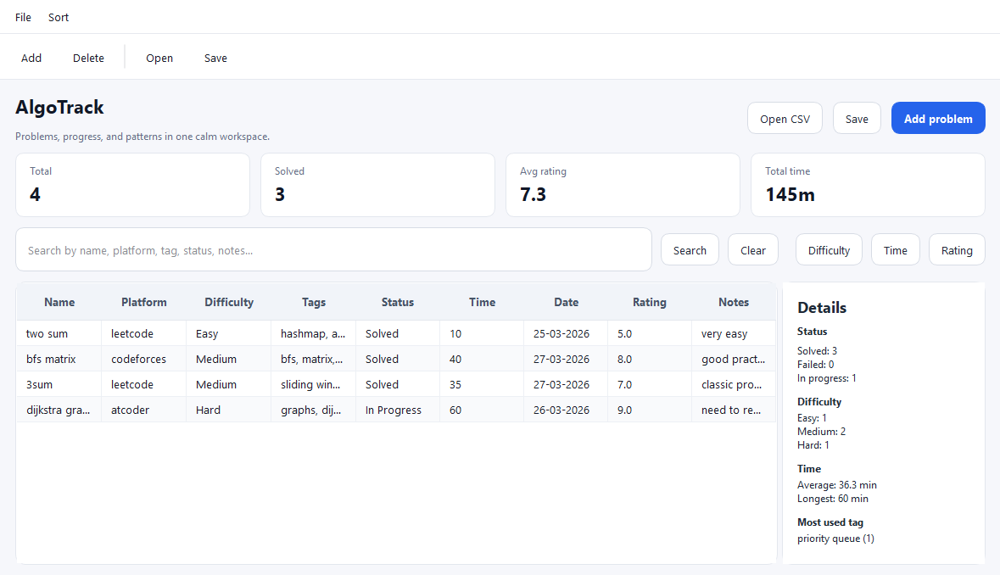
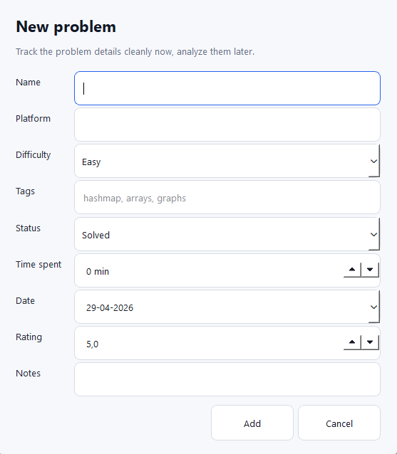
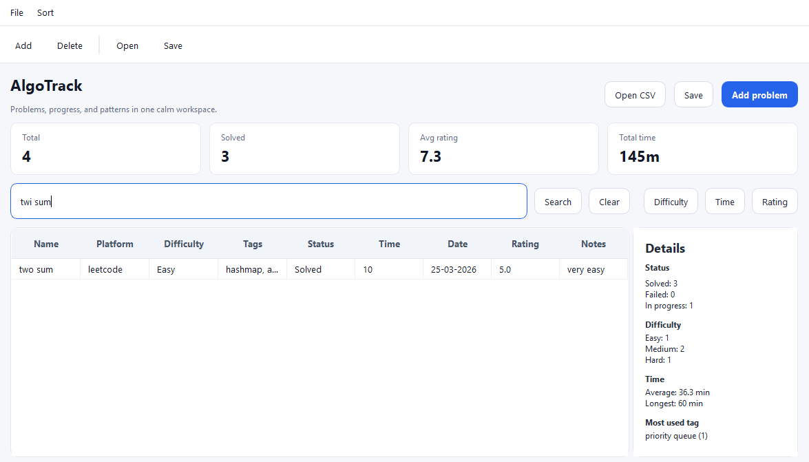

Problem library
Save problem names, platforms, ratings, difficulties and links so every practice session becomes searchable history instead of a scattered browser trail.
Desktop tracker for serious algorithm practice
AlgoTrack helps programmers organize LeetCode, Codeforces, AtCoder and interview prep problems with clean status tracking, difficulty filters, ratings, time logs, notes and useful practice statistics.
Free desktop app. Windows build available through GitHub Releases.

Features
AlgoTrack is built around the information competitive programmers and interview candidates actually review later: what happened, why it happened, and what to do next.
Save problem names, platforms, ratings, difficulties and links so every practice session becomes searchable history instead of a scattered browser trail.
Mark problems as solved, failed or in progress. See what needs a retry and avoid quietly forgetting the problems that exposed a weak pattern.
Group problems by dynamic programming, graphs, greedy, binary search, trees, strings or your own custom tags for deliberate topic-based practice.
Record time spent and write concise notes about mistakes, key ideas, edge cases and follow-up improvements while the solution is still fresh.
Review total problems, difficulty distribution, average solving time and progress trends to understand whether your practice is balanced.
Built as a C++/Qt desktop application, AlgoTrack keeps your practice tracker fast, local and distraction-free while you work.
Screenshots
Real AlgoTrack screens show the desktop workflow for logging problems, reviewing progress and keeping notes close to your practice history.


Built for practice
AlgoTrack was built while training algorithms seriously, with a focus on tracking real progress instead of keeping scattered notes, browser history and unfinished spreadsheets.
Built around problem status, difficulty, tags, notes and solving time.
A fast C++/Qt desktop app designed for distraction-free practice.
Helps identify failed problems, weak topics and problems worth retrying.
Why use AlgoTrack
Spreadsheets become messy. They work for a week, then filters, notes and links start fighting each other. AlgoTrack gives the workflow a dedicated home.
Browser history forgets context. You need to know not only which problem you opened, but what you tried, how long it took and whether you should revisit it.
Practice needs feedback. Difficulty distribution, failed attempts and average solving time reveal weak areas faster than memory alone.
Local desktop tools stay focused. AlgoTrack is designed as a practical C++/Qt app for programmers who want a quiet place to manage progress.
Articles
SEO-focused content can bring search traffic from developers looking for a LeetCode tracker or a better way to organize coding problems.
A practical method for turning random problem solving into measurable progress.
WorkflowBuild a review loop using tags, notes, difficulty and time spent.
ToolsWhen a dedicated algorithm practice tracker becomes worth it.
SEO Guide
If you practice algorithms regularly, you eventually run into a quiet but expensive problem: the work becomes hard to remember. You solve a LeetCode problem today, struggle with a Codeforces graph task tomorrow, bookmark an AtCoder dynamic programming problem for later, and after a few weeks your progress is spread across browser history, platform profiles, random notes, screenshots and half-finished spreadsheets. The result is not just inconvenience. It makes practice less effective because you lose the context that turns each problem into a lesson.
The best way to track coding problems is to keep a structured practice log that records the problem, platform, status, difficulty, topic tags, rating, time spent, notes and review intent. A good tracker should answer simple questions quickly: Which dynamic programming problems did I fail? How many hard problems did I solve this month? What topics take me the longest? Which problems should I retry before an interview? Without those answers, algorithm practice can feel productive while still being poorly directed.
Most developers start by assuming the platform will remember everything for them. LeetCode stores submissions, Codeforces stores contests and AtCoder keeps accepted solutions, but those records are platform-specific. They rarely explain your reasoning, your failed ideas, or whether a problem was solved after reading the editorial. They also do not combine your practice across websites. If your training includes interview problems, virtual contests and topic drills, you need a place that sees the whole picture.
Another challenge is that algorithm progress is not linear. Solving ten easy array problems may feel good, but it does not prove readiness for harder graph, tree or dynamic programming tasks. A useful tracker makes patterns visible. You may discover that you solve medium binary search problems quickly but consistently spend too long on recursion. You may notice that your failed problems cluster around shortest paths or bitmask DP. That insight is difficult to get from memory alone.
A strong coding problem tracker does not need to be complicated, but it does need the right fields. At minimum, record the problem name, platform, URL, status, difficulty and tags. These fields make the tracker searchable and allow you to group problems by topic or progress stage. For example, you can filter for unsolved graph problems, solved hard problems, or all Codeforces tasks rated around 1600.
Status is one of the most important fields because it separates finished work from unresolved learning opportunities. Simple labels such as solved, failed and in progress are enough for most people. A failed problem is not a bad result; it is a signal. The tracker should make failed attempts easy to revisit because those problems often produce the biggest improvement when reviewed properly.
Difficulty helps you balance practice. LeetCode uses categories like easy, medium and hard, while Codeforces and AtCoder often use numerical ratings. Keeping both a difficulty field and a rating field gives you flexibility. Over time, you can see whether your average rating is increasing and whether your practice is stuck in a comfort zone.
Tags turn a long list of problems into a learning map. Common tags include arrays, strings, binary search, graphs, trees, dynamic programming, greedy, math, data structures and two pointers. You can also add personal tags such as review, interview, editorial needed or tricky edge case. The goal is not to tag perfectly. The goal is to make future review easier.
Tracking time can feel unnecessary at first, but it becomes useful quickly. If a medium problem takes two hours, that may reveal a concept gap. If a hard problem takes twenty minutes because you recently practiced the same pattern, that is useful too. Average solving time helps you understand whether speed is improving, especially when preparing for timed interviews or contests.
There are several ways to organize coding problems, and each one has tradeoffs. The simplest method is a notebook or markdown file. This is fast and flexible, but it becomes hard to filter once the list grows. You can write excellent notes, yet still struggle to answer data questions like how many graph problems you failed this month.
Spreadsheets are the next common option. A spreadsheet can store structured fields, filters and formulas. It is a good starting point for many developers. The downside is that spreadsheets are not designed specifically for algorithm practice. Notes can become cramped, tags can become inconsistent, and the workflow often feels more like maintaining a database than learning algorithms.
Some people rely only on platform profiles. This works if all practice happens in one place and if submission history is enough. For most developers, it is not enough. Interview prep usually combines multiple platforms, curated lists, company questions, contest problems and personal notes. A platform profile cannot easily tell the full story.
AlgoTrack is designed for developers who want a focused desktop app for algorithm practice tracking. Instead of forcing your workflow into a generic spreadsheet, it gives you fields that match the way programmers actually practice: problem name, status, difficulty, tags, platform, rating, time spent and notes. Because it is built as a C++/Qt desktop application, it fits naturally into a local development setup and keeps the experience fast and direct.
The biggest advantage of a dedicated tracker is consistency. When every problem is logged in the same format, review becomes easier. You can open the app after a practice session, add the problem, mark whether it was solved or failed, tag the relevant topics and write the one or two ideas that mattered. Later, when you want to review dynamic programming or prepare for a graph-heavy interview, your past work is ready to filter and inspect.
AlgoTrack also supports statistics, which are essential for long-term improvement. Total problem count can be motivating, but deeper stats are more useful: difficulty distribution, average time spent and progress by status. These numbers help you avoid accidental imbalance. If almost every solved problem is easy, the tracker will show it. If hard problems always remain in progress, that is a signal to adjust your study plan.
Start simple. After each practice session, log every meaningful problem. Do not wait until the end of the week because the details fade quickly. Add the problem name, platform and difficulty first. Then choose a status. If you solved it without help, mark it solved. If you needed the editorial or could not finish, mark it failed or in progress. The label is not about pride; it is about making the next review honest.
Next, add tags. Use broad topic tags first, such as graphs or dynamic programming, then add more specific tags only when they help. For example, shortest path is more useful than a vague graph tag when you want to review Dijkstra or BFS. Keep tag names consistent so filtering remains clean.
Finally, write notes that your future self can understand in thirty seconds. A good note might say: "Missed the monotonic stack pattern; next greater element from right to left." Another might say: "Solved after editorial; revisit binary search on answer." Notes should capture the key lesson, not rewrite the entire solution.
A weekly review is enough for most developers. Look at failed and in-progress problems first. Choose a small number to retry without reading the previous solution. Then scan your statistics. Are you practicing the topics you intended to practice? Is your average time improving? Are you avoiding hard problems? This review loop turns tracking from passive record keeping into active training.
Before interviews or contests, use the tracker differently. Filter by relevant tags and revisit representative problems. For interviews, that might mean arrays, hash maps, binary search, trees, graphs and dynamic programming. For competitive programming, it might mean ratings around your target level and topics with repeated failures.
The best way to track coding problems is the method you will actually maintain, but it should be structured enough to support review. For beginners, a spreadsheet can be a useful starting point. For developers practicing consistently across LeetCode, Codeforces, AtCoder and other platforms, a dedicated algorithm practice tracker is usually better. AlgoTrack gives that workflow a focused desktop home: save the problem, mark the status, add tags and notes, track time and use statistics to guide the next session.
Good tracking does not solve problems for you, but it makes every problem count more. It shows what you practiced, what you avoided, where you improved and what deserves another attempt. That is the difference between simply doing more problems and building a practice system that compounds over time.
Download
Download AlgoTrack and keep your LeetCode, Codeforces, AtCoder and interview practice organized in one focused desktop app.